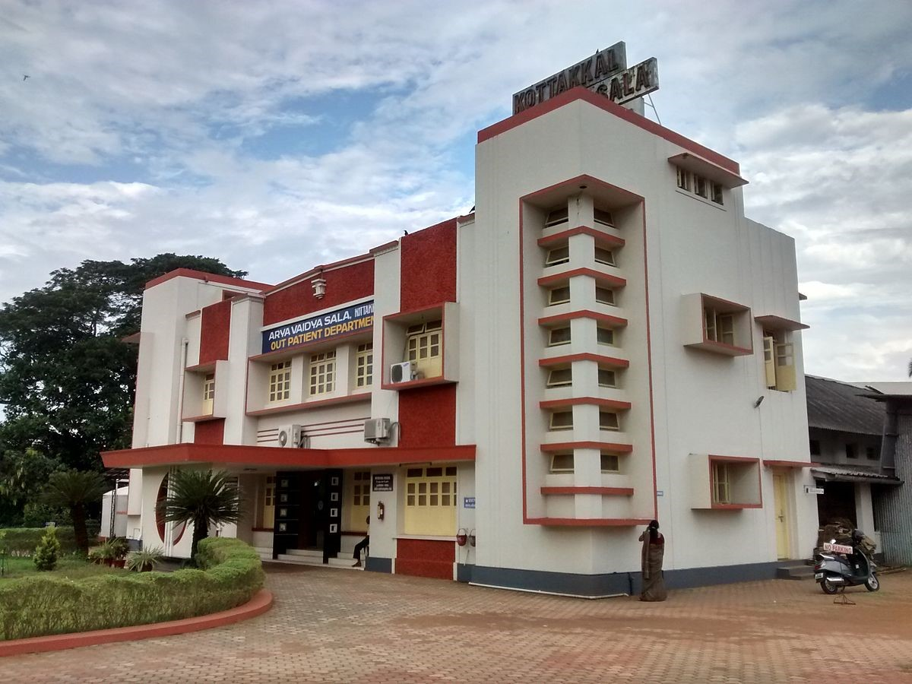
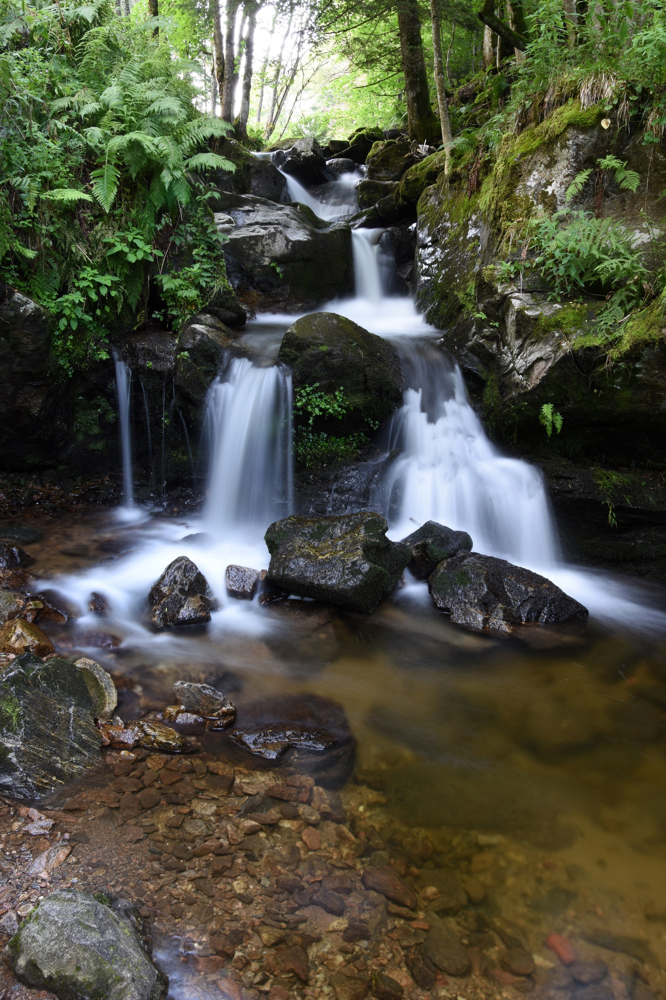
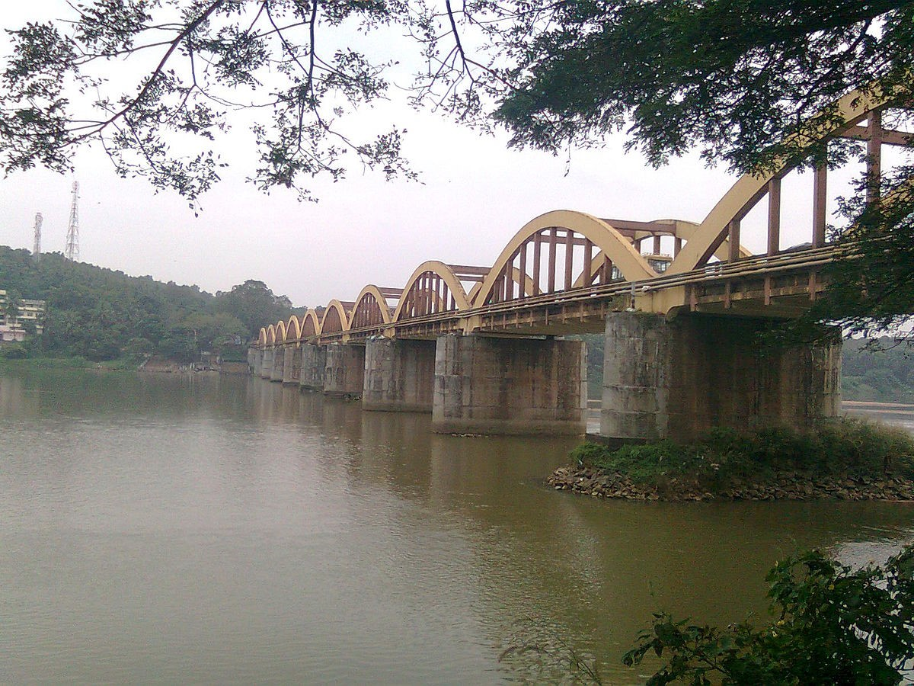

Malappuram is the most populous district of Kerala, which is home to around 13% of the total population of the state. Malappuram is the third major contributing district to the Gross State Domestic Product of Kerala as of 2019, after Ernakulam and Thiruvananthapuram. Three of Kerala's six longest rivers, namely Chaliyar, Kadalundi River, and Bharathappuzha, and their tributaries, flow through the district.
How to Reach
Malappuram is well connected by roads. There are four KSRTC stations in district.[111] 2 National highways pass through district- NH 66 and NH 966. The oldest railway station in the state is at Tirur.[45] The stations at Tanur, Parappanangadi, and Vallikkunnu also form parts of the oldest railway line in the state laid from Tirur to Beypore. Malappuram is served by Calicut International Airport.
Places to Visit
Arya Vaidya Sala
Arya Vaidya Sala - known for its heritage and expertise in the Indian traditional medicine system of Ayurveda.
Ayyappanov Waterfall
A waterfall at Athavanad.
Bharathappuzha
The second-longest river in Kerala. Also known in the names River Ponnani, Nila and Perar.

Arya Vaidya Sala
Arya Vaidya Sala - known for its heritage and expertise in the Indian traditional medicine system of Ayurveda.

Ayyappanov Waterfall
A waterfall at Athavanad.

Bharathappuzha
The second-longest river in Kerala. Also known in the names River Ponnani, Nila and Perar.